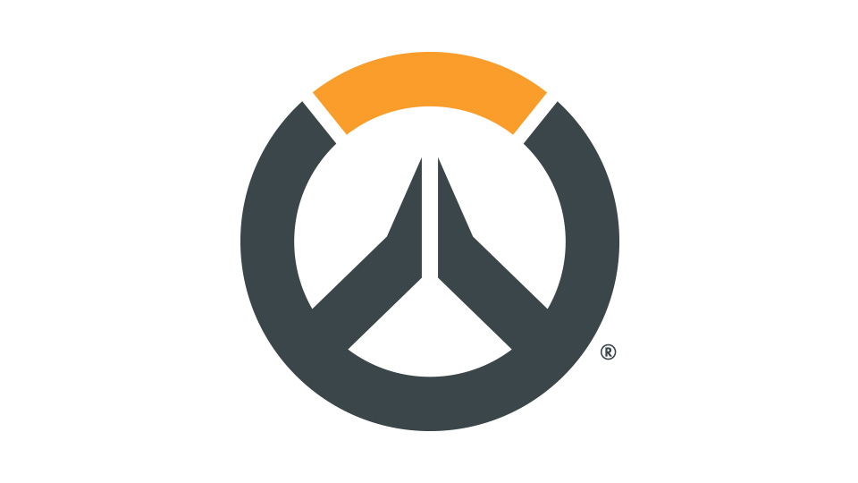
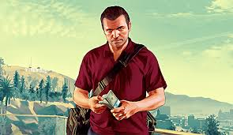

Games collections
Video games is one of the best ways for me to relax myself physically and emotionally. Sometimes, after I finished all my school work, and I get too much pressure on me, I will open my OMEN3 PRO and start to play some games. The four games, League of Legends, Overwatch, Grand Theft Auto Five and Counter Strike Globle Offensive are my favorite games. As you can see, I'm not kind of person who play offline which means play alone. No matter what kind of enterteinment ways, I will always play on team or multiplayer.
video games
League of Legneds
This is a very old pc MOBA game. It was designed to operate on the Microsoft Windows operating system. The game was first announced on October 7, 2008 and released a year later on October 27, 2009. The game was in beta from April 10, 2009 to October 26th, 2009. And get very popular in the world. The best thing about League of Legends is this game never get unpopular.
'
'
 Click to try it free and download
Click to try it free and download
Overwatch
Overwatch is a team-based multiplayer first-person shooter developed and published by Blizzard Entertainment and released on May 24, 2016, for PlayStation 4, Xbox One, and Windows. Described as a "hero shooter," Overwatch assigns players into two teams of six, with each player selecting from a roster of over 30 characters, known as "heroes," each with a unique style of play whose roles are divided into three general categories that fit their purpose. It is also Blizzard's fourth major franchise and came about following the 2014 cancellation of the ambitious massively multiplayer online role-playing game Titan.It is also one of the most competitive games in the world.

Click to try it and download
Grand Theft Auto V
Grand Theft Auto V is an action adventure game. It was developed in September 2013 by Rockstar which is a game company. In my opinion, this game is the freest game I have played because you can do everything you want in this game, such as killing people, robbery, racing and missions. It also has plenty of other system that connect to the real world, such as the economic system. By the way, people that are under 18 years old cannot play or watch this game.

Click to try and download
CSGO
Counter-Strike: Global Offensive is a multiplayer first-person shooter video game developed by Hidden Path Entertainment and Valve Corporation. It is the fourth game in the Counter-Strike series and was released for Microsoft Windows, OS X, Xbox 360, and PlayStation 3 on August 21, 2012, while the Linux version was released in 2014. I started play this game after I watched a streamer whose name is Qeizi. His nervous system is trained so well, that attracted me to play this game.

Click to try it free and download